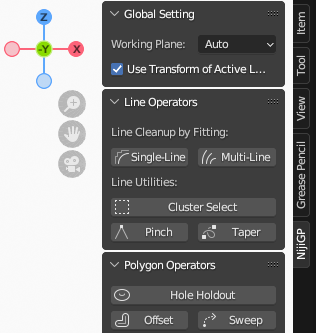

基本操作 #
操作界面 #
NijiGPen会在Blender的以下几个页面中添加新的面板与按钮：
侧边栏 #

在Grease Pencil的绘制/权重绘制/编辑模式下，名为“NijiGP”的新标签会被添加到3D视图的侧边栏中，其中的功能按钮取决于不同的模式，这是最主要的使用插件功能的方法。
默认状态下，插件的功能没有快捷键，但可以右键点击功能按钮来自定义快捷键。
工具栏 #
NijiGPen在Grease Pencil的编辑模式中添加了一些新的工具，它们的图标上标有“2D”字样作为区分。它们与侧边栏对应按钮的功能基本相同，但是可以用鼠标移动来直观地调整参数。

3D视图快捷按钮（可选） #
另外，3D视图的下方有一组快捷按钮，提供以下功能：
- 撤销/重做
- 旋转画布
- 排列图形：置顶/置底/上移/下移
这一组按钮用于改善触摸屏设备（例如Microsoft Surface）上的操作，参考了流行的平板设备中的绘画/设计软件。它们既可以用鼠标、也可以用触控笔触发。
如果不需要这些按钮，或者它们与其它插件发生冲突，可以在偏好设置面板中调节它们的位置或者直接关闭此功能。
2D工作平面的概念 #
本插件的绝大多数功能都作用于一个二维平面，因此正确选择这一平面很重要。Blender的“二维动画”模板默认使用X-Z平面进行Grease Pencil的绘制，不需要手动设置；但如果您不使用该模板，而是在三维空间中绘画（例如某个三维物体的表面上），则需要注意侧边栏顶端的Working Plane选项：
- 默认选项（
自动）会根据所有输入顶点的坐标计算出最重要的两个维度，然后再根据当前视图来决定上下与前后。- 请注意不要在同一个操作中选择属于多个平面的顶点，以免自动估计出错。这种情况会引起一条警报信息。
- 其它选项包括使用当前视图，或任一正交平面（X-Y、X-Z或Y-Z）。
插件对图层变换的支持有限，如果您对不同的Grease Pencil图层设置了不同的旋转角度，请将每个插件操作限制在同一图层中，并确保勾选了
Use Transform of Active Layer选项。另一方面，直接旋转Grease Pencil物体不会影响插件功能，不需要手动操作。